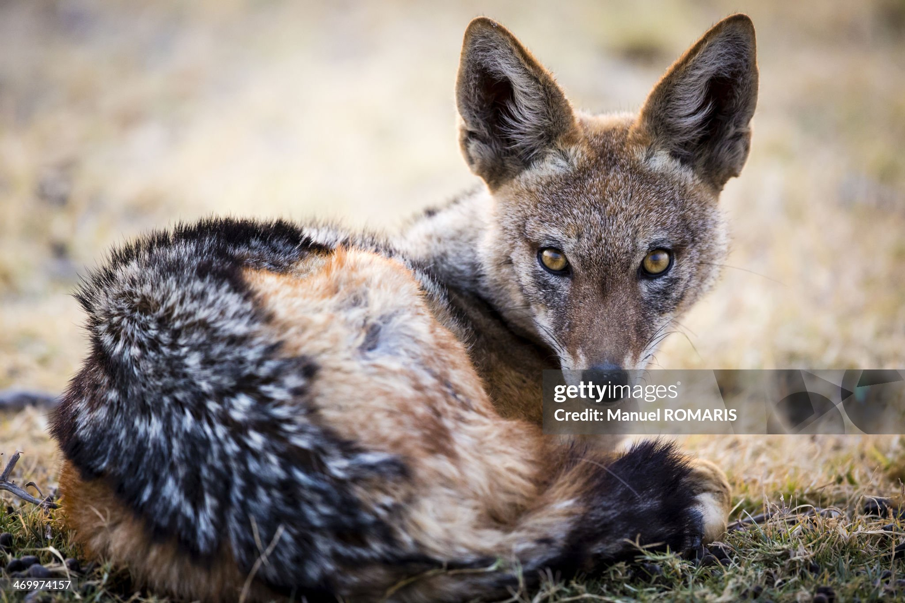

The black-backed jackal is a member of the dog family. It has a rusty red coat with a black patch on its back and a black-tipped tail. It measures around 95 centimetres (37 inches) from head to tail. As opportunistic omnivores, jackals eat what they can. They work in family packs to hunt small antelopes, but they'll also feed on reptiles, insects, birds, fruits, berries, and carcasses left by larger predators. There are two distinct populations of black-backed jackals in Africa—one in East Africa, in countries including Kenya, Ethiopia, and Tanzania, and one in southern Africa, in countries including Namibia, Angola, and South Africa. These animals live in a wide variety of habitats, from deserts to grasslands to savannahs. The IUCN lists black-backed jackals as least concern, meaning they face few threats. However, they are hunted by farmers who kill them to protect their livestock.
